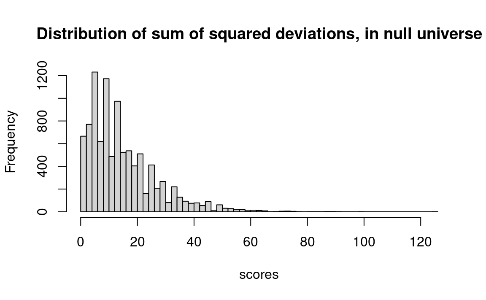
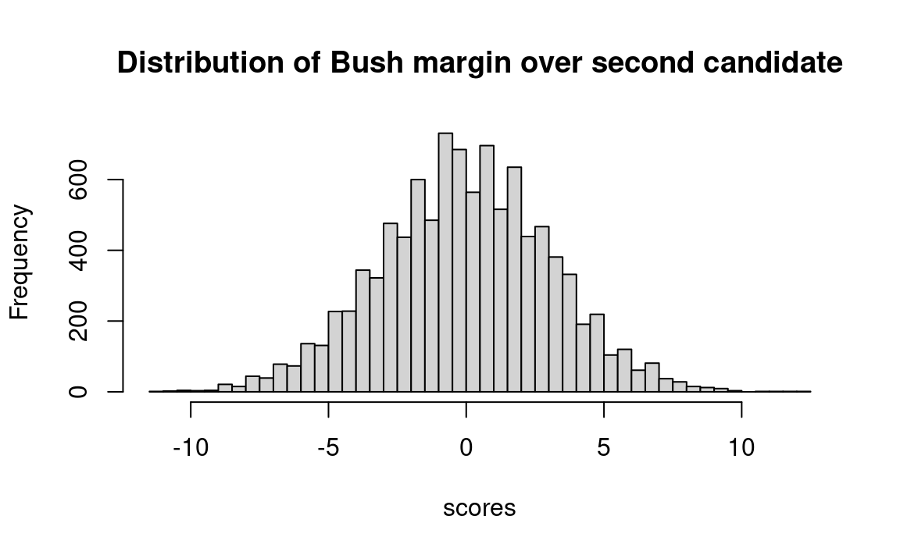
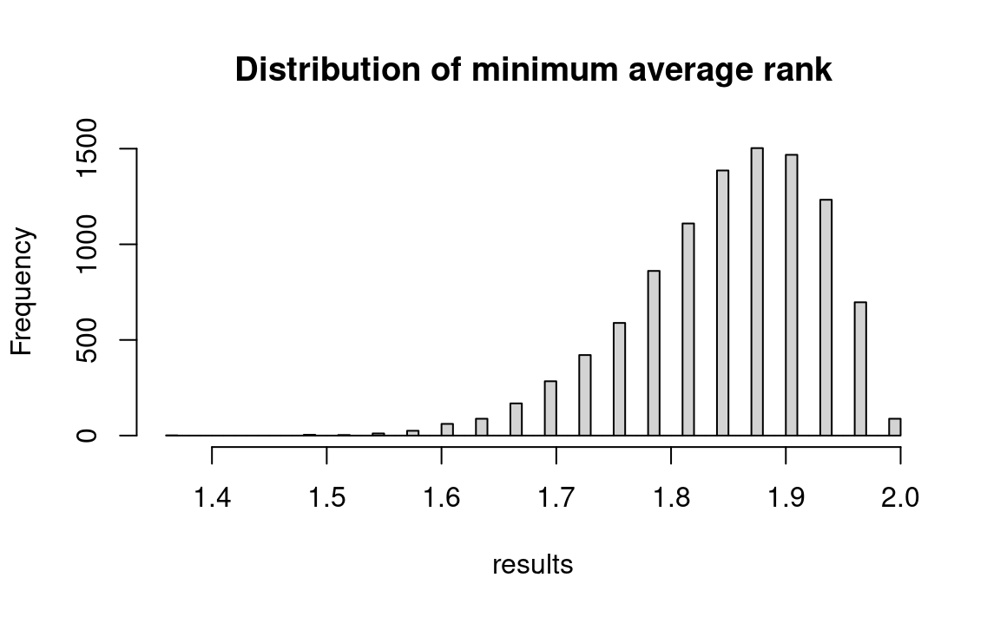

| Trial no | Count for group A | Count for group B | Count for group C | Count for group D | Any >=14 or any <=6 |
|---|---|---|---|---|---|
| 1 | 12 | 12 | 8 | 11 | No |
| 2 | 8 | 10 | 11 | 6 | No |
| 3 | 6 | 10 | 11 | 12 | No |
| 4 | 7 | 15 | 13 | 9 | Yes |
| 5 | 9 | 10 | 10 | 9 | No |
| 6 | 12 | 11 | 4 | 16 | Yes |
23 The Statistics of Hypothesis-Testing with Counted Data, Part 2
Here’s the bad-news-good-news message again: The bad news is that the subject of inferential statistics is extremely difficult — not because it is complex but rather because it is subtle. The cause of the difficulty is that the world around us is difficult to understand, and spoon-fed mathematical simplifications which you manipulate mechanically simply mislead you into thinking you understand that about which you have not got a clue.
The good news is that you — and that means you , even if you say you are “no good at mathematics” — can understand these problems with a layperson’s hard thinking, even if you have no mathematical background beyond arithmetic and you think that you have no mathematical capability. That’s because the difficulty lies in such matters as pin-pointing the right question, and understanding how to interpret your results.
The problems in the previous chapter were tough enough. But this chapter considers problems with additional complications, such as when there are more than two groups, or paired comparisons for the same units of observation.
23.1 Comparisons among more than two samples of counted data
23.1.1 Example: Do Any of Four Treatments Affect Sex Ratio in Fruit Flies?
This is an example of the general problem — when the benchmark universe proportion is known, is the proportion of the binomial population affected by any of the treatments?
Suppose that, instead of experimenting with just one type of radiation treatment on the flies (as in Section 21.2.0.1), you try four different treatments, which we shall label A, B, C, and D. Treatment A produces fourteen males and six females, but treatments B, C, and D produce ten, eleven, and ten males, respectively. It is immediately obvious that there is no reason to think that treatment B, C, or D affects the sex ratio. But what about treatment A?
A frequent and dangerous mistake made by young scientists is to scrounge around in the data for the most extreme result, and then treat it as if it were the only result. In the context of this example, it would be fallacious to think that the probability of the fourteen-males-to-six females split observed for treatment A is the same as the probability that we figured for a single experiment in the example Section 21.2.0.1. Instead, we must consider that our benchmark universe is composed of four sets of twenty trials, each trial having a 50-50 probability of being male. We can consider that our previous trials 1-4 in Section 21.2.0.1 constitute a single new trial, and each subsequent set of four previous trials constitute another new trial. We then ask how likely a new trial of our sets of twenty flips is to produce one set with fourteen or more of one or the other sex.
Let us make the procedure explicit, starting at the procedure from Section 21.2.0.1. Again, we will check for 14 or more males, or 6 or fewer males (meaning, 14 or more females).
- Step 1. Let tails = male, heads = female.
- Step 2. Flip twenty coins and count the number of tails (males). Call this the count for group A. Repeat three more times to get counts for groups B, C and D.
- Step 5. If any of the group counts for A, or B or C or D is 14 ore more then record “Yes”, or if any of the group counts A, B, C, D are 6 or less (meaning >= 14 females), record “yes”. If neither is true, record “No”.
- Step 4. Repeat steps 2 and 3 perhaps 100 times.
- Step 5. Calculate the proportion of “yes” results in the 100 trials. This proportion estimates the probability that a fruit fly population with a proportion of 50 percent males will produce as many as 14 males, or as many as 14 females, in at least one of four groups of 20 flies.
We begin the trials with data as in Table 23.1. In two of the six simulation trials, one or more one samples (groups) shows 14 or more males. Without even concerning ourselves about whether we should be looking at males or females, or just males, or needing to do more trials, we can see that it would be very common indeed to have one of four treatments show fourteen or more of one sex just by chance. This discovery clearly indicates that a result that would be fairly unusual (five in 25) for a single sample alone is commonplace in one of four observed samples.
Start of fruit_fly4 notebook
A key point of the notebook here is that each trial consists of four groups of 20 randomly generated hypothetical fruit flies. And if we consider 10,000 trials, we will be examining 40,000 sets of 20 fruit flies.
In each trial we generate 4 random samples (groups) of 20 fruit flies, and for each, we count the number of males (“males”s) and then check whether that group has more than 13 of either sex (actually, more than 13 “males”s or less than 7 “males”). If it does, then we change a variable called unusual to 1, which informs us that for this sample, at least 1 group of 20 fruit flies had results as unusual as the results from the fruit flies exposed to the four treatments.
After the 10,000 runs are made, we count the number of trials where one sample had a group of fruit flies with 14 or more of either sex, and show the results.
n_iters <- 10000
# Make vector to store results for each trial.
results <- numeric(n_iters)
for (i in 1:n_iters) {
# unusual indicates whether we have obtained any trial group with more
# than 13 of either sex. We start at 0 (= no).
unusual <- 0
# Repeat the following steps 4 times to constitute 4 trial groups
# (representing treatments A, B, C, and D) of 20 flies each.
for (j in 1:4) {
flies <- sample(c('male', 'female'), replace=TRUE, size=20)
n_males <- sum(flies == 'male')
if (n_males >= 13 | n_males <= 6) {
unusual <- 1
}
}
# unusual now tells us whether we got a result as extreme as that
# observed (unusual == 1 if we did, unusual == 0 if not). We must
# keep track of this result in the results variable, for each experiment.
results[i] <- unusual
}
# The number of trials for which at least one of the four tests
# exceeded 13 males or 13 females.
k <- sum(results)
kk <- k / n_iters
message('Proportion of trials with one or more group >=14 or <=6 :', kk)Proportion of trials with one or more group >=14 or <=6 :0.5742End of fruit_fly4 notebook
In one set of 10,000 trials, there were more than 13 males or more than 13 females 57 percent of the time — clearly not an unusual occurrence.
23.1.2 Example: Do Four Psychological Treatments Differ in Effectiveness?
Do Several Two-Outcome Samples Differ Among Themselves in Their Proportions?
Consider four different psychological treatments designed to rehabilitate young offenders. Instead of a numerical test score, there is only a “yes” or a “no” answer as to whether the young person has kept their record clean or has gotten into trouble again. Call a clean record “success”. Label the treatments P, R, S, and T, each of which is administered to a separate group of twenty young offenders. The number of “success” outcomes per group has been: P, 17; R, 10; S, 10; T, 7. Is it improbable that all four groups come from the same universe?
This problem is like the placebo vs. cancer-cure problem, but now there are more than two samples. It is also like the four-sample irradiated-fruit flies example (Section 23.1.1), except that now we are not asking whether any or some of the samples differ from a given universe (50-50 sex ratio in that case). Rather, we are now asking whether there are differences among the samples themselves. Please keep in mind that we are still dealing with two-outcome (success-or-failure, yes-or-no, well-or-sick) problems. The outcomes fall into categories, to which we give labels (“success” or “failure”, “well” or “sick”). Later we shall take up problems that are similar except that the outcomes are “quantitative” — in that the outcomes are numbers rather than labels.
If all four groups were drawn from the same universe, that universe has an estimated success rate of 17/20 + 10/20 + 10/20 + 7/20 = 44/80 = 55/100 = 55%, because the observed data taken as a whole constitute our best guess as to the nature of the universe from which they come — again, if they all come from the same universe. (Please think this matter over a bit, because it is important and subtle. It may help you to notice the absence of any other information about the universe from which they have all come, if they have come from the same universe.)
Therefore, select twenty two-digit numbers for each group from the random-number table, marking “success” for each number in the range 1 through 55 and “failure” for each number 56 through 100. Conduct a number of such trials. Then count the proportion of times that the difference between the highest and lowest groups is larger than the widest observed difference, the difference between P and T (17-7 = 10). In Table 23.2, none of the first six trials shows anywhere near as large a difference as the observed range of 10, suggesting that it would be rare for four treatments that are “really” similar to show so great a difference. There is thus reason to believe that P and T differ in their effects.
| Trial | P | R | S | T | Largest Minus Smallest |
|---|---|---|---|---|---|
| 1 | 11 | 9 | 8 | 12 | 4 |
| 2 | 10 | 10 | 12 | 12 | 2 |
| 3 | 9 | 12 | 8 | 12 | 4 |
| 4 | 9 | 11 | 12 | 10 | 3 |
| 5 | 10 | 10 | 11 | 12 | 1 |
| 6 | 11 | 11 | 9 | 11 | 2 |
The strategy of the R solution to “offenders” is similar to the strategy for previous problems in this chapter. The benchmark (null) hypothesis is that the treatments do not differ in their effects observed, and we estimate the probability that the observed results would occur by chance using the benchmark universe. The only new twist is that we must instruct the computer to find the groups with the highest and the lowest numbers of success rates.
Using R, we generate four “treatments,” each represented by 20 labels. We draw these 20 labels from the choices “success” or “failure”, with a 55% chance of getting “success” and a 45% chance of “failure”. Follow along in the program for the rest of the procedure:
Start of offenders notebook
# Set the number of trials
n_trials <- 10000
# Set the sample size for each trial
sample_size <- 20
# An empty array to store the trials
scores <- numeric(n_trials)
# Do 10000 trials
for (i in 1:n_trials) {
# The first treatment group
a <- sample(c('success', 'failure'),
size=sample_size,
prob=c(0.55, 0.45),
replace=TRUE)
# Count successes.
a_count <- sum(a == 'success')
# Second, third and fourth treatment groups, and successes.
b <- sample(c('success', 'failure'),
size=sample_size,
prob=c(0.55, 0.45),
replace=TRUE)
b_count <- sum(b == 'success')
c <- sample(c('success', 'failure'),
size=sample_size,
prob=c(0.55, 0.45),
replace=TRUE)
c_count <- sum(c == 'success')
d <- sample(c('success', 'failure'),
size=sample_size,
prob=c(0.55, 0.45),
replace=TRUE)
d_count <- sum(d == 'success')
# Now find all the pairwise differences in successes among the groups.
a_minus_b <- a_count - b_count
a_minus_c <- a_count - c_count
a_minus_d <- a_count - d_count
b_minus_c <- b_count - c_count
b_minus_d <- b_count - d_count
c_minus_d <- c_count - d_count
# Concatenate, or join, all the differences in a single array "diffs".
diffs <- c(a_minus_b, a_minus_c, a_minus_d,
b_minus_c, b_minus_d, c_minus_d)
# Since we are interested only in the magnitude of the difference, not its
# direction, we take the absolute value of all the differences (we remove
# any minus signs, making all values positive).
abs_diffs <- abs(diffs)
# Find the largest of all the differences
max_abs_diff <- max(abs_diffs)
# Keep score of the largest
scores[i] <- max_abs_diff
# End a trial, go back and repeat until all 10000 are complete.
}
# How many of the trials yielded a maximum difference greater than the
# observed maximum difference?
k <- sum(scores >= 10)
# Convert to a proportion
kk <- k / n_trials
message('Proportion >= 10 was: ', kk)Proportion >= 10 was: 0.0108End of offenders notebook
Only one percent of the experiments with randomly generated treatments from a common success rate of .55 produced differences in excess of the observed maximum difference (10).
An alternative approach to this problem would be to deal with each result’s departure from the mean, rather than the largest difference among the pairs. Once again, we want to deal with absolute departures, since we are interested only in magnitude of difference. We could take the absolute value of the differences, as above, but we will try something different here. Squaring the differences also renders them all positive: this is a common approach in statistics.
Start of offenders_squared notebook
The first step is to examine our data and calculate this measure: The mean is 11, the differences (call deviations from the mean) are 6, 1, 1, and 4, the squared deviations are 36, 1, 1, and 16, and their sum is 54. In R:
# The actual scores for each treatment.
treat_scores <- c(17, 10, 10, 7)
# The mean.
m <- mean(treat_scores)
# The four deviations from the mean
deviations <- treat_scores - m
# Squared deviations.
sq_deviations <- deviations ** 2
# Sum of squared deviations.
actual_sum_sq_deviations <- sum(sq_deviations)
# Show the result.
actual_sum_sq_deviations[1] 54Our experiment will be, as before, to constitute four groups of 20 at random from a universe with a 55 percent rehabilitation rate. We then calculate this same measure for the random groups. If it is frequently larger than 54, then we conclude that a uniform cure rate of 55 percent could easily have produced the observed results. The program that follows also generates the four treatments by using a for loop, rather than spelling out the sample command 4 times as above. In R:
# Set the number of trials.
n_trials <- 10000
# Set the sample size for each trial.
sample_size <- 20
# An empty vector to store the trials.
scores <- numeric(n_trials)
# Do 10000 trials.
for (i in 1:n_trials) {
# Repeat the following steps 4 times to constitute 4 groups of 20 and
# count their success rates.
group_scores <- numeric(4)
for (group_no in 1:4) {
# A treatment group
group <- sample(c('success', 'failure'),
size=20,
prob=c(0.55, 0.45),
replace=TRUE)
# Count successes.
group_count <- sum(group == 'success')
# Store result.
group_scores[group_no] <- group_count
# End the procedure for one group of 20, go back and repeat until all 4
# are done.
}
# Calculate the mean
m <- mean(group_scores)
# Calculate the deviations of the scores from the mean of the scores.
deviations <- group_scores - m
# Square them, making them them positive.
sq_deviations <- deviations ** 2
# Sum up the squared deviations.
sum_sq_deviations <- sum(sq_deviations)
# Keep track of the result for each trial.
scores[i] <- sum_sq_deviations
# End a trial, go back and repeat until all 10000 are complete.
}
# Produce a histogram of the trial results.
hist(scores, breaks=50,
main='Distribution of sum of squared deviations, in null universe')
From this histogram, we see that in only about 1 percent of the cases did our trial sum of squared differences equal or exceed 54, confirming our conclusion that this is an unusual result. We can have R calculate this proportion:
# How many of the trials yielded a maximum difference greater than the
# observed maximum difference?
k <- sum(scores >= actual_sum_sq_deviations)
# Convert to a proportion
kk <- k / n_trials
message('Proportion >= ', actual_sum_sq_deviations, ' was: ', kk)Proportion >= 54 was: 0.0119The conventional way to approach this problem would be with what is known as a chi-squared test.
End of offenders_squared notebook
23.1.3 Example: Three-way Comparison
In a national election poll of 750 respondents in May, 1992, George Bush got 36 percent of the preferences (270 voters), Ross Perot got 30 percent (225 voters), and Bill Clinton got 28 percent (210 voters), with 45 undecided (Wall Street Journal, October 29, 1992, A16). Assuming that the poll was representative of actual voting, how likely is it that Bush was actually behind and just came out ahead in this poll by chance? Or to put it differently, what was the probability that Bush actually had a plurality of support, rather than that his apparent advantage was a matter of sampling variability? We test this by constructing a universe in which Bush is slightly behind (in practice, just equal), and then drawing samples to see how likely it is that those samples will show Bush ahead.
We must first find that universe — among all possible universes that yield a conclusion contrary to the conclusion shown by the data, and one in which we are interested — that has the highest probability of producing the observed sample. With a two-person race the universe is obvious: a universe that is evenly split except for a single vote against “our” candidate who is now in the lead, i.e. in practice a 50-50 universe. In that simple case we then ask the probability that that universe would produce a sample as far out in the direction of the conclusion drawn from the observed sample as the observed sample.
With a three-person race, however, the decision is not obvious (and if this problem becomes too murky for you, skip over it; it is included here more for fun than anything else). And there is no standard method for handling this problem in conventional statistics (a solution in terms of a confidence interval was first offered in 1992, and that one is very complicated and not very satisfactory to me (JLS)). But the sort of thinking that we must labor to accomplish is also required for any conventional solution; the difficulty is inherent in the problem, rather than being inherent in resampling, and resampling will be at least as simple and understandable as any formulaic approach.
Before we start to think about this problem, let us simplify by ignoring the 45 undecided voters, and adjusting the poll percentages accordingly. Of the remaining voters, Bush got 270 / 705 = 38.3%, Perot had 225 / 705 = 31.9%, and Clinton had 210 / 705 = 29.8%. Bush’s lead over Perot, in voters with a declared preference, was therefore 38.3 - 31.9 = 6.4%.
The relevant universe is (or so I think) a universe that is 35 Bush — 35 Perot — 30 Clinton (for a race where the poll indicates a 38.3-31.9-29.8% split); the 35-35-30 universe is of interest because it is the universe that is closest to the observed sample that does not provide a win for Bush; it is roughly analogous to the 50-50 split in the two-person race, though a clear-cut argument would require a lot more discussion. A universe that is split 34-34-32, or any of the other possible universes, is less likely to produce a 36-30-28 sample (such as was observed) than is a 35-35-30 universe.1. (In technical terms, it might be a “maximum likelihood universe” that we are looking for.) For completeness, we might also try a 36-36-28 universe to see if that produces a result very different than the 35-35-30 universe.
Among those universes where Bush is behind (or equal), a universe that is split 50-50-0 (with just one extra vote for the closest opponent to Bush) would be the most likely to produce a 6 percent difference between the top two candidates by chance, but we are not prepared to believe that the voters are split in such a fashion. This assumption shows that we are bringing some judgments to bear from outside the observed data.
For now, the point is not how to discover the appropriate benchmark hypothesis, but rather its criterion — which is, I repeat, that universe (among all possible universes) that yields a conclusion contrary to the conclusion shown by the data (and in which we are interested) and that (among such universes that yield such a conclusion) has the highest probability of producing the observed sample.
Let’s go through the logic again: 1) Bush apparently has a 6.4% percent lead over the second-place candidate. 2) We ask if the second-place candidate might be ahead if all voters were polled, rather than just this sample. We test that by setting up a universe in which the second-place candidate is infinitesimally ahead (in practice, we make the two top candidates equal in our hypothetical universe). And we make the third-place candidate somewhere close to the top two candidates. 3) We then draw samples from this universe and observe how often the result is a 6.4% percent lead for the top candidate (who starts off just below or equal in the universe).
From here on, the procedure is straightforward: Determine how likely that universe is to produce a sample as far (or further) away in the direction of “our” candidate winning. (One could do something like this even if the candidate of interest were not now in the lead.)
This problem teaches again that one must think explicitly about the choice of a benchmark hypothesis. The grounds for the choice of the benchmark hypothesis should precede the notebook, or should be included as an extended commentary within the notebook.
This R code embodies the previous line of thought.
Start of bush_clinton notebook
# Number of voters who expressed a preference.
n_voters <- 705
# Benchmark proportions.
bench_ps <- c(0.35, 0.35, 0.30)
# Set the number of trials.
n_trials <- 10000
# An empty array to store the trials.
scores <- numeric(n_trials)
# Do 10000 trials
for (i in 1:n_trials) {
# Take a sample of 705 votes, with replacement.
samp <- sample(c('Bush', 'Perot', 'Clinton'),
size=n_voters,
prob=bench_ps,
replace=TRUE)
# Count the Bush voters, etc.
n_bush <- sum(samp == 'Bush')
n_perot <- sum(samp == 'Perot')
n_clinton <- sum(samp == 'Clinton')
# Join Perot & Clinton votes into a vector.
others <- c(n_perot, n_clinton)
# Find the larger of the other two.
n_second <- max(others)
# Find Bush's margin over 2nd.
lead <- n_bush - n_second
# Convert vote difference to percent lead.
pct_lead <- lead / n_voters * 100
# Store the result.
scores[i] <- pct_lead
}
hist(scores, breaks=50,
main='Distribution of Bush margin over second candidate')
# Compare to the observed margin in the sample of 705 corresponding to a 6.4
# percent margin by Bush over 2nd place finisher (rounded).
k <- sum(scores >= 6.4)
kk <- k / n_trials
message('Proportion of trials where Bush margin >= 6.4%: ', kk)Proportion of trials where Bush margin >= 6.4%: 0.0189
End of bush_clinton notebook
When we run this program with a 36-36-28 split, we also get a similar result — around 2.2 percent (try it — edit bench_ps in the notebook and run it again).
Our main result is that our 35-35-30 analysis shows a probability of only 1.9 percent that Bush would score a 6.4 percentage point “victory” in the sample, by chance, if the universe were split as specified. So Bush could feel reasonably confident that at the time the poll was taken, he was ahead of the other two candidates.
23.2 Paired Comparisons With Counted Data
23.2.1 Example: the pig rations again, but comparing pairs of pigs
This is a Paired-Comparison Test.
To illustrate how several different procedures can reasonably be used to deal with a given problem, here is another way to decide whether pig ration A is “really” better: We can assume that the order of the pig scores listed within each ration group is random — perhaps the order of the stalls the pigs were kept in, or their alphabetical-name order, or any other random order not related to their weights . Match the first pig eating ration A with the first pig eating ration B, and also match the second pigs, the third pigs, and so forth. Then count the number of matched pairs on which ration A does better. On nine of twelve pairings ration A does better, that is, 31.0 > 26.0, 34.0 > 24.0, and so forth.
Now we can ask: If the two rations are equally good, how often will one ration exceed the other nine or more times out of twelve, just by chance? This is the same as asking how often either heads or tails will come up nine or more times in twelve tosses. (This is a “two-tailed” test because, as far as we know, either ration may be as good as or better than the other.) Once we have decided to treat the problem in this manner, it is quite similar to Section 21.2.0.1 (the first fruitfly irradiation problem). We ask how likely it is that the outcome will be as far away as the observed outcome (9 “heads” of 12) from 6 of 12 (which is what we expect to get by chance in this case if the two rations are similar).
So we conduct perhaps fifty trials as in Table 23.3, where an asterisk denotes nine or more heads or tails.
- Step 1. Let odd numbers equal “A better” and even numbers equal “B better.”
- Step 2. Examine 12 random digits and check whether 9 or more, or 3 or less, are odd. If so, record “yes,” otherwise “no.”
- Step 3. Repeat step 2 fifty times.
- Step 4. Compute the proportion “yes,” which estimates the probability sought.
The results are shown in Table 23.3.
In 8 of 50 simulation trials, one or the other ration had nine or more tosses in its favor. Therefore, we estimate the probability to be .16 (eight of fifty) that samples this different would be generated by chance if the samples came from the same universe.
| Trial | “Heads” or “Odds” | “Tails” or “Evens” | Trial | “Heads” or “Odds” | “Tails” or “Evens” |
|---|---|---|---|---|---|
| Ration A | Ration B | Ration A | Ration B | ||
| 1 | 6 | 6 | 26 | 6 | 6 |
| 2 | 4 | 8 | 27 | 5 | 7 |
| 3 | 6 | 6 | 28 | 7 | 5 |
| 4 | 7 | 5 | 29 | 4 | 8 |
| 5 | 3 | 9 | 30 | 6 | 6 |
| 6 | 5 | 7 | 31 | 9 | 3 |
| 7 | 8 | 4 | 32 | 2 | 10 |
| 8 | 6 | 6 | 33 | 7 | 5 |
| 9 | 7 | 5 | 34 | 5 | 7 |
| 10 | 9 | 3 | 35 | 6 | 6 |
| 11 | 7 | 5 | 36 | 8 | 4 |
| 12 | 3 | 9 | 37 | 6 | 6 |
| 13 | 5 | 7 | 38 | 4 | 8 |
| 14 | 6 | 6 | 39 | 5 | 7 |
| 15 | 6 | 6 | 40 | 8 | 4 |
| 16 | 8 | 4 | 41 | 5 | 7 |
| 17 | 5 | 7 | 42 | 6 | 6 |
| 18 | 9 | 3 | 43 | 5 | 7 |
| 19 | 6 | 6 | 44 | 7 | 5 |
| 20 | 7 | 5 | 45 | 6 | 6 |
| 21 | 4 | 8 | 46 | 4 | 8 |
| 22 | 10 | 2 | 47 | 5 | 7 |
| 23 | 6 | 6 | 48 | 5 | 7 |
| 24 | 5 | 7 | 49 | 8 | 4 |
| 25 | 3 | 9 | 50 | 7 | 5 |
Now for a R program and results. This notebook is different from the example at Section 21.2.7 in that it compares the weight-gain results of pairs of pigs, instead of simply looking at the rankings for weight gains.
The key to the pigs pair notebook is the sample line. If we assume that ration A does not have an effect on weight gain (which is the “benchmark” or “null” hypothesis), then the results of the actual experiment would be no different than if we randomly sample “A” and “B” and treat an “A” as a larger weight gain for the ration A pig, and a “B” as a larger weight gain for the ration B pig. Both events have a .5 chance of occurring for each pair of pigs because if the rations had no effect on weight gain (the null hypothesis), ration A pigs would have larger weight gains about half of the time. The next step is to count (sum) the number of times that the weight gains of one group (call it the group fed with ration A) were larger than the weight gains of the other (call it the group fed with ration B). The complete program follows:
Start of pig_pairs notebook
n_iters <- 10000
# Make array to store results for each trial.
results <- numeric(n_iters)
# Do 10000 trials
for (i in 1:n_iters) {
# Generate randomly 12 "A" or "B"s. Each of the 12 values represents
# one "pairing" where "A" <- ration A "wins," "B" <- ration B "wins.".
wins <- sample(c('A', 'B'), replace=TRUE, size=12)
# Count the number of "pairings" where ration A won, put the result in
# "n_a_wins".
n_a_wins <- sum(wins == 'A')
# Keep track of the result in results.
results[i] <- n_a_wins
# End the trial, go back and repeat until all 10000 trials are complete.
}
# Determine how often we got 9 or more "wins" for ration A.
high <- sum(results >= 9)
# Determine how often we got 3 or fewer "wins" for ration A.
low <- sum(results <= 3)
# Add the two together
k <- high + low
# Convert to a proportion
kk <- k / n_iters
# Print the result.
message('Proportion >=9 or <=3: ', kk)Proportion >=9 or <=3: 0.1433End of pig_pairs notebook
Notice how we proceeded in examples Section 21.2.7 and Section 23.2.1. The data were originally quantitative — weight gains in pounds for each pig. But for simplicity we classified the data into simpler counted-data formats. The first format (Section 21.2.7) was a rank order, from highest to lowest. The second format (Section 23.2.1) was simply higher-lower, obtained by randomly pairing the observations (using alphabetical letter, or pig’s stall number, or whatever was the cause of the order in which the data were presented to be random). Classifying the data in either of these ways loses some information and makes the subsequent tests somewhat cruder than more refined analysis could provide (as we shall see in the following chapter), but the loss of efficiency is not crucial in many such cases. We shall see how to deal directly with the quantitative data in Chapter 24.
23.2.2 Example: merged firms compared to two non-merged groups
In a study by Simon, Mokhtari, and Simon (1996), a set of 33 advertising agencies that merged over a period of years were each compared to entities within two groups (each also of 33 firms) that did not merge; one non-merging group contained firms of roughly the same size as the final merged entities, and the other non-merging group contained pairs of non-merging firms whose total size was roughly the same as the total size of the merging entities.
The idea behind the matching was that each pair of merged firms was compared against
- a pair of contemporaneous firms that were roughly the same size as the merging firms before the merger, and
- a single firm that was roughly the same size as the merged entity after the merger.
Here (Table 23.4) are the data (provided by the authors):
| Set # | Merged | Match1 | Match2 |
|---|---|---|---|
| 1 | -0.200 | 0.026 | 0.000 |
| 2 | -0.348 | -0.125 | 0.080 |
| 3 | 0.075 | 0.063 | -0.023 |
| 4 | 0.126 | -0.042 | 0.165 |
| 5 | -0.102 | 0.080 | 0.278 |
| 6 | 0.038 | 0.149 | 0.430 |
| 7 | 0.116 | 0.152 | 0.143 |
| 8 | -0.098 | 0.038 | 0.040 |
| 9 | 0.021 | 0.077 | 0.011 |
| 10 | -0.017 | 0.284 | 0.189 |
| 11 | -0.365 | 0.139 | 0.039 |
| 12 | 0.088 | 0.039 | 0.095 |
| 13 | -0.263 | 0.056 | 0.045 |
| 14 | -0.049 | 0.054 | 0.008 |
| 15 | 0.011 | 0.048 | 0.095 |
| 16 | 0.010 | 0.198 | 0.061 |
| 17 | 0.071 | 0.421 | -0.025 |
| 18 | 0.002 | 0.074 | 0.053 |
| 19 | 0.005 | -0.007 | 0.050 |
| 20 | -0.054 | 0.172 | 0.110 |
| 21 | 0.023 | 0.028 | -0.022 |
| 22 | 0.060 | 0.049 | 0.167 |
| 23 | -0.060 | 0.026 | 0.021 |
| 24 | -0.089 | -0.059 | 0.077 |
| 25 | -0.025 | -0.018 | 0.060 |
| 26 | 0.076 | 0.013 | 0.035 |
| 27 | -0.002 | -0.045 | 0.054 |
| 28 | -0.220 | 0.343 | 0.043 |
| 29 | 0.382 | 0.221 | 0.116 |
| 30 | -0.007 | 0.255 | 0.237 |
| 31 | -0.163 | 0.011 | 0.190 |
| 32 | 0.192 | 0.150 | 0.152 |
| 33 | 0.061 | 0.170 | 0.094 |
Comparisons were made in several years before and after the mergings to see whether the merged entities did better or worse than the non-merging entities they were matched with by the researchers, but for simplicity we may focus on just one of the more important years in which they were compared — say, the revenue growth rates in the year after the merger.
Here are those average revenue growth rates for the three groups:
| Mean revenue growth | |
|---|---|
| Merged | -0.021 |
| Match1 | 0.092 |
| Match2 | 0.093 |
We could do a general test to determine whether there are differences among the means of the three groups, as was done in the “Differences Among 4 Pig Rations” problem (Section 24.0.1). However, we note that there may be considerable variation from one matched set to another — variation which can obscure the overall results if we resample from a large general bucket.
Therefore, we use the following resampling procedure that maintains the separation between matched sets by converting each observation into a rank (1, 2 or 3) within the matched set.
Here (Table 23.6) are those ranks, where 1 = worst, 3 = best:
| Set # | Merged | Match1 | Match2 |
|---|---|---|---|
| 1 | 1 | 3 | 2 |
| 2 | 1 | 2 | 3 |
| 3 | 3 | 2 | 1 |
| 4 | 2 | 1 | 3 |
| 5 | 1 | 2 | 3 |
| 6 | 1 | 2 | 3 |
| 7 | 1 | 3 | 2 |
| 8 | 1 | 2 | 3 |
| 9 | 2 | 3 | 1 |
| 10 | 1 | 3 | 2 |
| 11 | 1 | 3 | 2 |
| 12 | 2 | 1 | 3 |
| 13 | 1 | 3 | 2 |
| 14 | 1 | 3 | 2 |
| 15 | 1 | 2 | 3 |
| 16 | 1 | 3 | 2 |
| 17 | 2 | 3 | 1 |
| 18 | 1 | 3 | 2 |
| 19 | 2 | 1 | 3 |
| 20 | 1 | 3 | 2 |
| 21 | 2 | 3 | 1 |
| 22 | 2 | 1 | 3 |
| 23 | 1 | 3 | 2 |
| 24 | 1 | 2 | 3 |
| 25 | 1 | 2 | 3 |
| 26 | 3 | 1 | 2 |
| 27 | 2 | 1 | 3 |
| 28 | 1 | 3 | 2 |
| 29 | 3 | 2 | 1 |
| 30 | 1 | 3 | 2 |
| 31 | 1 | 2 | 3 |
| 32 | 3 | 1 | 2 |
| 33 | 1 | 3 | 2 |
These (Table 23.7) are the average ranks for the three groups (1 = worst, 3 = best):
| Mean rank | |
|---|---|
| Merged | 1.49 |
| Match1 | 2.27 |
| Match2 | 2.24 |
Is it possible that the merged group received such a low (poor) average ranking just by chance? The null hypothesis is that the ranks within each set were assigned randomly, and that “merged” came out so poorly just by chance. The following procedure simulates random assignment of ranks to the “merged” group:
- Randomly select 33 integers between “1” and “3” (inclusive).
- Find the average rank & record.
- Repeat steps 1 and 2, say, 10,000 times.
- Find out how often the average rank is as low as 1.48.
Here’s a R notebook to apply those steps:
Start of merger_ranks notebook
n_iters <- 10000
# Make array to store results for each trial.
results <- numeric(n_iters)
for (i in 1:n_iters) {
ranks <- sample(c(1, 2, 3), size=33, replace=TRUE)
mean_rank <- mean(ranks)
results[i] <- mean_rank
}
hist(results, breaks=20,
main='Mean ranks from random rank sampling')
k <- sum(results <= 1.48)
kk <- k / n_iters
message('Proportion of mean ranks <= 1.48: ', kk)Proportion of mean ranks <= 1.48: 1e-04
End of merger_ranks notebook
Interpretation: 10000 random selections of 33 ranks produced an average as low as the observed average in approximately 0 percent of the trials. Therefore we rule out chance as an explanation for the poor ranking of the merged firms.
Exactly the same technique might be used in experimental medical studies wherein subjects in an experimental group are matched with two different entities that receive placebos or control treatments.
For example, there have been several recent three-way tests of treatments for depression: drug therapy versus cognitive therapy versus combined drug and cognitive therapy. If we are interested in the combined drug-therapy treatment in particular, comparing it to standard existing treatments, we can proceed in the same fashion as in the merger problem.
We might just as well consider the real data from the merger as hypothetical data for a proposed test in 33 triplets of people that have been matched within triplet by sex, age, and years of education. The three treatments were to be chosen randomly within each triplet.
Assume that we now switch scales from the merger data, so that #1 = best and #3 = worst, and that the outcomes on a series of tests were ranked from best (#1) to worst (#3) within each triplet. Assume that the combined drug-and-therapy regime has the best average rank. How sure can we be that the observed result would not occur by chance? Here are the data from the merger study, seen here as Table 23.8:
| Triplet # | Therapy only | Combined | Drug only |
|---|---|---|---|
| 1 | 1 | 3 | 2 |
| 2 | 1 | 2 | 3 |
| 3 | 3 | 2 | 1 |
| 4 | 2 | 1 | 3 |
| 5 | 1 | 2 | 3 |
| 6 | 1 | 2 | 3 |
| 7 | 1 | 3 | 2 |
| 8 | 1 | 2 | 3 |
| 9 | 2 | 3 | 1 |
| 10 | 1 | 3 | 2 |
| 11 | 1 | 3 | 2 |
| 12 | 2 | 1 | 3 |
| 13 | 1 | 3 | 2 |
| 14 | 1 | 3 | 2 |
| 15 | 1 | 2 | 3 |
| 16 | 1 | 3 | 2 |
| 17 | 2 | 3 | 1 |
| 18 | 1 | 3 | 2 |
| 19 | 2 | 1 | 3 |
| 20 | 1 | 3 | 2 |
| 21 | 2 | 3 | 1 |
| 22 | 2 | 1 | 3 |
| 23 | 1 | 3 | 2 |
| 24 | 1 | 2 | 3 |
| 25 | 1 | 2 | 3 |
| 26 | 3 | 1 | 2 |
| 27 | 2 | 1 | 3 |
| 28 | 1 | 3 | 2 |
| 29 | 3 | 2 | 1 |
| 30 | 1 | 3 | 2 |
| 31 | 1 | 2 | 3 |
| 32 | 3 | 1 | 2 |
| 33 | 1 | 3 | 2 |
These (Table 23.9) are the average ranks for the three groups (1 = best, 3 = worst):
| Mean rank | |
|---|---|
| Therapy only | 1.49 |
| Combined | 2.27 |
| Drug only | 2.24 |
In these hypothetical data, the average rank for the drug and therapy regime is 1.48. Is it likely that the regimes do not “really” differ with respect to effectiveness, and that the drug and therapy regime came out with the best rank just by the luck of the draw? We test by asking, “If there is no difference, what is the probability that the treatment of interest will get an average rank this good, just by chance?”
We proceed exactly as with the solution for the merger problem (see above).
In the above problems, we did not concern ourselves with chance outcomes for the other therapies (or the matched firms) because they were not our primary focus. If, in actual fact, one of them had done exceptionally well or poorly, we would have paid little notice because their performance was not the object of the study. We needed, therefore, only to guard against the possibility that chance good luck for our therapy of interest might have led us to a hasty conclusion.
Suppose now that we are not interested primarily in the combined drug-therapy treatment, and that we have three treatments being tested, all on equal footing. It is no longer sufficient to ask the question “What is the probability that the combined therapy could come out this well just by chance?” We must now ask “What is the probability that any of the therapies could have come out this well by chance?” (Perhaps you can guess that this probability will be higher than the probability that our chosen therapy will do so well by chance.)
Here is a resampling procedure that will answer this question:
- Put the numbers “1”, “2” and “3” (corresponding to ranks) in a bucket
- Shuffle the numbers and deal them out to three locations that correspond to treatments (call the locations “t1,” “t2,” and “t3”)
- Repeat step two another 32 times (for a total of 33 repetitions, for 33 matched triplets)
- Find the average rank for each location (treatment).
- Record the minimum (best) score.
- Repeat steps 2-4, say, 10,000 times.
- Find out how often the minimum average rank for any treatment is as low as 1.48.
# Set the number of trials
n_iters <- 10000
# An empty array to store the trial results.
results <- numeric(n_iters)
# Step 1 above.
bucket <- c(1, 2, 3)
n_rows <- 33
# Do 10000 trials.
for (i in 1:n_iters) {
# Prepare vectors to store shuffled row results.
t1 <- numeric(n_rows)
t2 <- numeric(n_rows)
t3 <- numeric(n_rows)
# Step 3 (for all 33 rows).
for (row_no in 1:n_rows) {
# Step 2.
shuffled <- sample(bucket)
# Step 2 continued.
t1[row_no] <- shuffled[1]
t2[row_no] <- shuffled[2]
t3[row_no] <- shuffled[3]
}
# Step 4.
m_t1 <- mean(t1)
m_t2 <- mean(t2)
m_t3 <- mean(t3)
# Step 5.
means <- c(m_t1, m_t2, m_t3)
min_mean <- min(means)
results[i] <- min_mean
}
hist(results, breaks=50,
main='Distribution of minimum average rank')
# Step 7.
k <- sum(results <= 1.49)
kk <- k / n_iters
message('Proportion minimum average rank <= 1.48: ', kk)Proportion minimum average rank <= 1.48: 5e-04
:::
Interpretation: We did 10,000 random shufflings of 33 ranks, apportioned to three “treatments”. Of these, about 0 percent produced, for the best treatment in the three, an average as low as the observed average, therefore we rule out chance as an explanation for the success of the combined therapy.
An interesting feature of the mergers (or depression treatment) problem is that it would be hard to find a conventional test that would handle this three-way comparison in an efficient manner. Certainly it would be impossible to find a test that does not require formulae and tables that only a talented professional statistician could manage satisfactorily, and even they are not likely to fully understand those formulaic procedures.
23.3 Technical note
Some of the tests introduced in this chapter are similar to standard non-parametric rank and sign tests. They differ less in the structure of the test statistic than in the way in which significance is assessed (the comparison is to multiple simulations of a model based on the benchmark hypothesis, rather than to critical values calculated analytically).
We are interested in choosing the benchmark universe that a) has Bush with equal or lower percentage votes than another candidate and b) has the largest probability of giving rise to the observed vote proportions in the sample. We can show by trying all possible options that the 35, 35, 30 universe has the highest probability in giving rise to the (38.3%, 31.9%, 29.8%) sample percentages (270, 225, 210 vote counts). See this Python notebook for the simulation.↩︎